AI Academy · Level 4 · Grade 9 · Week 29 · Student lesson
Feature Engineering
Learn to understand, design, build, test and explain AI systems responsibly.
Project: Responsible Plant Classifier
Before you start
Week 12: units affect feature calculations.
Plan time to read, investigate and explain. Keep predictions separate from observations.
Student lesson · 1 of 18
Your mission
Start with the target: Create features available at prediction time. Try the recall before opening notes.
Your learning target
I can create features available at prediction time.
I can fit feature transformations using training evidence only.
I can compare a feature change without changing the evaluation set.
Remember before reading
Close your notes first. A rough first answer helps us choose the right starting point; it is not a score for your ability.
Without opening the old lesson, explain one key idea from Learning Curves. Give an example and a mistake that the idea helps you avoid.
Without opening the old lesson, explain one key idea from Reproducible Experiments. Give an example and a mistake that the idea helps you avoid.
Without opening the old lesson, explain one key idea from Hold Out Test Data. Give an example and a mistake that the idea helps you avoid.
After trying, check the relevant lesson or ask your teacher. Change the part of your explanation that the evidence shows was wrong.
Feature engineering transforms raw inputs into useful structure while preserving prediction-time availability and avoiding leakage.
Your target
LEARNING TARGET Length=12 cm, width=30 mm. Compute length/width using matching units. Explain handling for zero or missing width and where learned scaling is fitted.
Builder name and experiment date:
Readiness for the connected explanation
Why must preprocessing be fitted on training only?
Readiness for Relationships and confounding
Can a survey of only one club establish the preference of all students?
This week’s end goal
By the end, I can explain feature engineering using a traced example and a stated limitation.
Student lesson · 2 of 18
Notice the evidence
Investigate the supplied Feature Engineering case. Separate observations, given facts and assumptions before choosing an explanation.
PICTURE ENTRY
Notice → Predict → Explain
Begin with visible evidence; do not explain more than the picture and information support.
Start with this puzzle
MYSTERY The team must use feature engineering to solve a model-building problem. What information do they have? What important evidence is still missing?
Name three visible details without interpreting them.
Predict the data, model, or evaluation decision being made.
Identify one hidden assumption that could change the result.
State what evidence would confirm or reject your prediction.
My prediction and supporting evidence:
A closer explanation
A useful feature represents information available when the prediction is made. In a fictional parcel task, length and width are measured before packing, so area=length*width is available.
The final delivery delay is not available when predicting dispatch time. A strong correlation cannot make a future value legitimate.
Use fictional classroom data throughout this investigation. Keep the task, units, reference labels and data split visible as you reason.
Earlier weeks supplied the model-building process; this week examines feature engineering.
Apply the connected idea: Relationships and confounding
In a fictional log, groups that practiced longer also scored higher: 1 hour with 4 points, 2 hours with 6 and 3 hours with 8. This pattern is an association. Prior experience could affect both practice choices and scores.
The table alone cannot establish the effect of adding practice time.
Student lesson · 3 of 18
See how it works
Follow the mechanism for Feature Engineering. Connect each labelled input, deciding step and result.
ML MECHANISM
Input → Model → Evidence
Trace the information, fitted behavior, and evaluation proof separately.
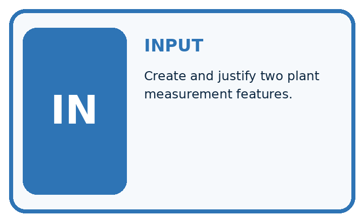
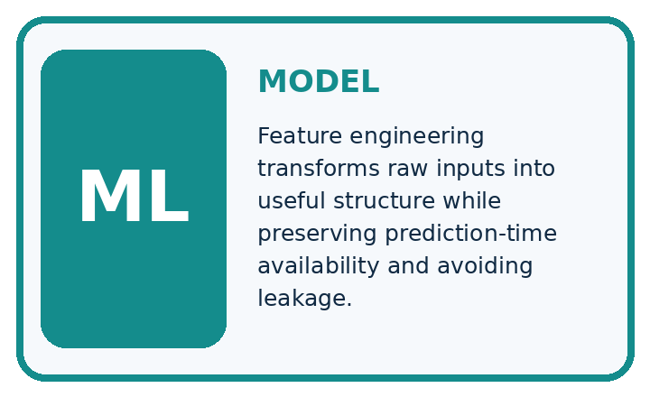
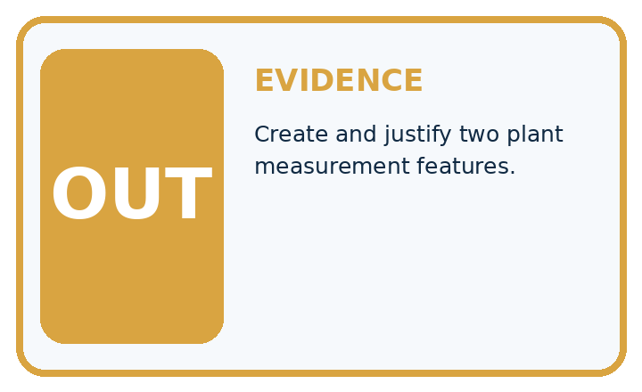
Question to explain
QUESTION Create and justify two plant measurement features.
MODEL IDEA Feature engineering transforms raw inputs into useful structure while preserving prediction-time availability and avoiding leakage.
PROOF NEEDED Use an unseen case, visible calculation, error analysis, and a stated limitation.
How the mechanism works
UNDER THE HOOD Raw leaf length=8 cm and width=4 cm. Derived aspect_ratio = 4 ÷ 8 = 0.5.
Draw a fresh data → model → prediction → evaluation trace:
A closer explanation
Training rectangles have lengths [2, 4, 6] and widths [3, 2, 1], so areas are[6, 8, 6] square cm. Training mean area is 20/3. A validation rectangle length 5 width 2 has area 10 and centered area 10-20/3=10/3.
Freeze the training mean; do not recompute it with validation.
Before continuing, underline the decision rule and circle the evidence that supports the conclusion. Explain the example to a partner without replacing the counts or conditions with a stronger claim.
Keep the distinction between an observed result and a proposed next step.
Apply the connected idea: Relationships and confounding
rows = [{"hours": 1, "score": 4},
{"hours": 2, "score": 6},
{"hours": 3, "score": 8}]
for row in rows:
print(row["hours"], row["score"])Follow the evidence
The numbers rise together in these three invented records. A description such as higher practice hours went with higher scores is supported. A claim that one extra hour guarantees two more points goes beyond the observations.
No statistical calculation is required to see this limit.
Separate a pattern from a cause
The three records show that higher practice time goes with higher scores. They do not tell us what would happen if the same learner practised for one more hour.
Prior experience could make someone both practise more and score higher. That is a possible confounder: another influence connected to both quantities. First describe the pattern accurately.
Then propose a comparison that addresses alternative explanations rather than treating the pattern as a guarantee.
Connect the picture and the explanation
Point to the input, the deciding step and the result in this week’s visual. Explain the same step in ordinary words. A picture helps when you can say what each part represents.
Student lesson · 4 of 18
Compare the cases
Compare the supplied cases for Feature Engineering. Identify the detail that changes the conclusion.
EVALUATION DESIGN
Four Tests, Four Kinds of Evidence
A system is not understood until it survives more than one comfortable example.


NORMAL Expected data and expected behavior.
Keep this boundary clear
BOUNDARY Value close to a threshold, ambiguous label, or uncertain prediction.
MISSING Necessary field, label, source, or measurement is unavailable.
SHIFTED New lighting, species, device, subgroup, or time condition.
RELEASE RULE Passing one case never proves generalization. Predefine expected behavior for all four categories.
Which case most threatens today's claim, and why?
Change one thing in the pictured case
Change one thing
Change: Include the query in the centering mean.
Predicted result
Prediction: Mean becomes26/4=6.5 cm² and query feature1.5 cm²; this changes the fitted transformation.
Why the result follows
Reason: A held-out input should not silently redefine a training-fitted preprocessing step.
Student lesson · 5 of 18
Words that unlock the idea
Use the vocabulary of Feature Engineering to explain a concrete decision, rather than only memorising definitions.
VOCABULARY
Words You Can Calculate and Defend
A definition matters when it lets you interpret a new dataset, model, or result.
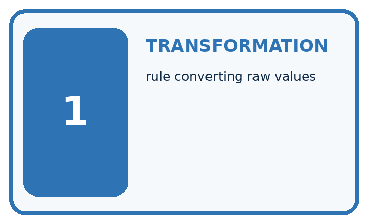
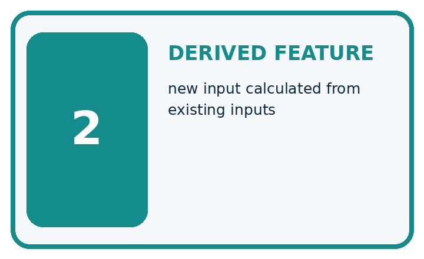
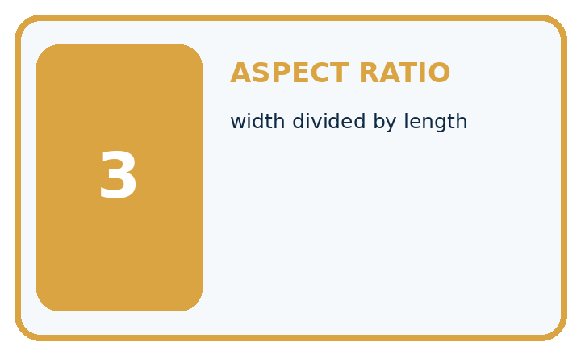
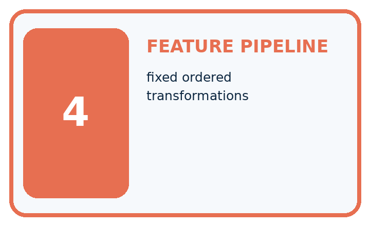
| Term | Precise meaning | My ML example |
|---|---|---|
| transformation | rule converting raw values | |
| derived feature | new input calculated from existing inputs | |
| aspect ratio | width divided by length | |
| feature pipeline | fixed ordered transformations |
MISCONCEPTION TO REPAIR Creating many features automatically gives the model more useful information.
Repair the claim using a definition, calculation, or test record:
Words used in the closer explanation
| Word | Meaning |
|---|---|
| Feature engineering | Constructing model inputs from available measurements |
| Derived feature | An input computed from other inputs |
| Leakage | Information entering a model that would not be available legitimately |
| Availability | Whether a value exists when a prediction is needed |
Terms for Relationships and confounding
| Term | Meaning |
|---|---|
| Association | Two variables vary together in observed data |
| Cause | A change in one factor produces a change in another |
| Confounder | A factor related to both the proposed cause and outcome |
| Comparison | Examining outcomes under different conditions |
Student lesson · 6 of 18
Follow a worked example
Follow the worked trace for Feature Engineering, predict a step, then compare with its explanation.
WORKED EVIDENCE
Reason Step by Step
Predict first. Then check each step. A correct answer without visible evidence cannot be audited.
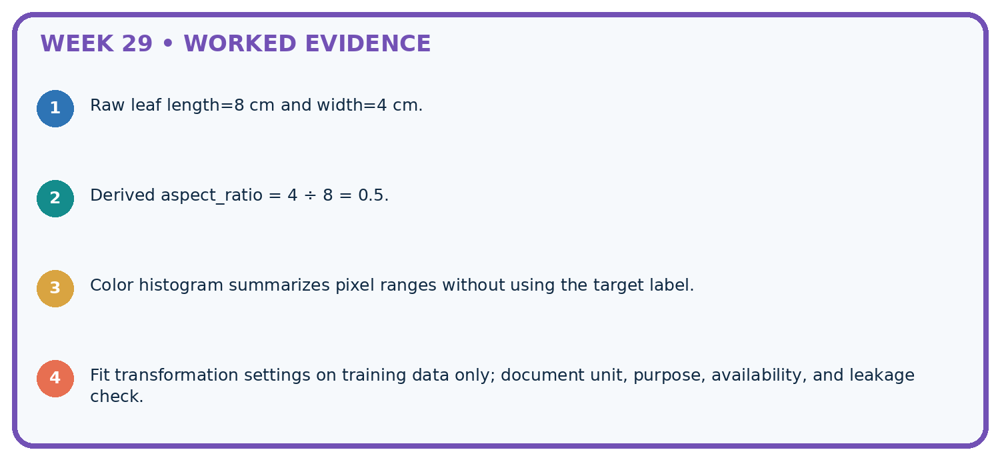
Step 1
STEP 1 Raw leaf length=8 cm and width=4 cm.
Step 2
STEP 2 Derived aspect_ratio = 4 ÷ 8 = 0.5.
Step 3
STEP 3 Color histogram summarizes pixel ranges without using the target label.
Step 4
STEP 4 Fit transformation settings on training data only; document unit, purpose, availability, and leakage check.
CHECK Verify the denominator, unit, split, class definition, and data version before interpreting a score.
Recalculate, retrace, or restate the evidence independently:
A closer explanation
Feature engineering at a glance
Apply the connected idea: Relationships and confounding
Learn from the worked case
Cover the result before checking it. Say what is given, choose the procedure, and follow one step at a time. Then uncover the result and explain your first mismatch. Ask why a step is allowed, not only what number it produces.
A pictorial worked case: Feature Engineering
Engineer a feature with a transformation defined before evaluating a new leaf.
The facts we will use
Supplied facts
Training rectangular leaf cards have areas [2, 6, 10] cm². Area=length×width; center by training mean. Query length 2, width 4 cm.
Supplied facts
All inputs and outcomes in this worked example are invented classroom data; no real model run is claimed.
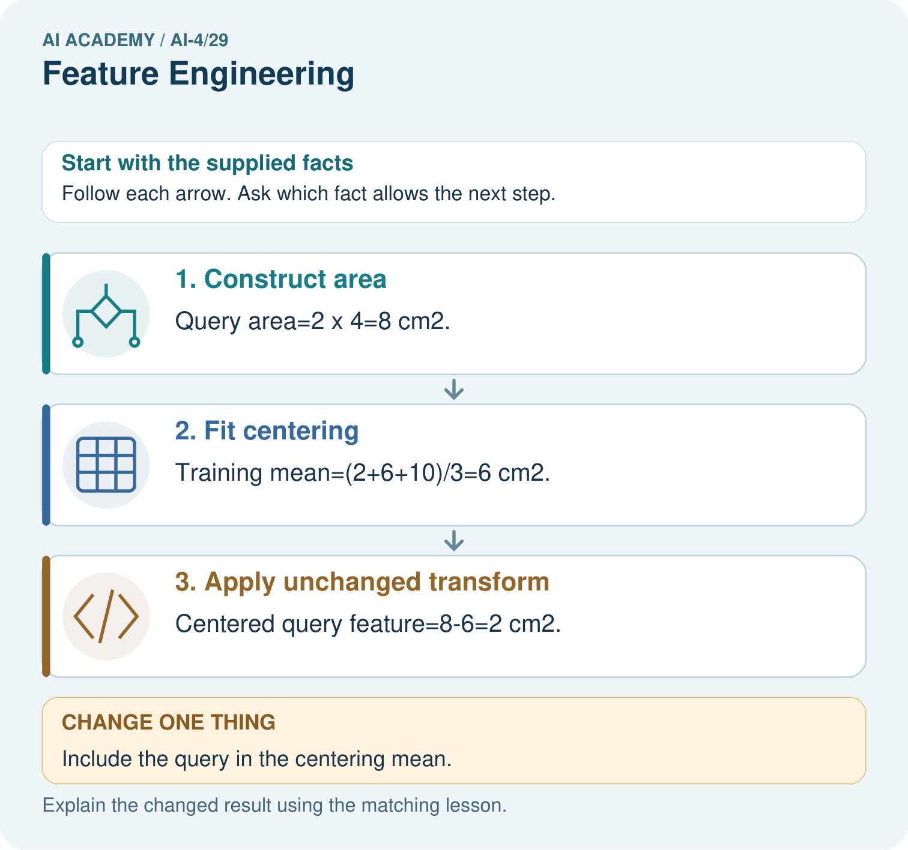
Read the picture one step at a time
Why this result follows
Why the result follows
Read the picture in order. Centered query feature=8-6=2 cm². The arrows show which recorded input or intermediate result each decision uses.
Explain the deciding step aloud before checking the changed case; pointing to the final answer alone does not show how it follows.
What this example does not establish
Keep the stated limit
Area is a geometric toy feature. Useful predictive relationships need separate evaluation, and real leaves need a suitable measurement definition.
Keep the stated limit
Read the labelled picture: What should be saved so another group transforms the query identically? Point to the relevant step in the picture, then write the changed result and the rule or evidence that supports it.
Keep the stated limit
Change one thing: Include the query in the centering mean. Predict the result before checking the explanation. What remains the same?
Student lesson · 7 of 18
Find and repair a mistake
Find the unsupported step in the Feature Engineering claim and explain a repair using the supplied evidence.
Find the first error
ERROR DETECTIVE
Compare → Diagnose → Repair
Do not patch the answer. Find the earliest unsupported assumption, data problem, or experiment error.
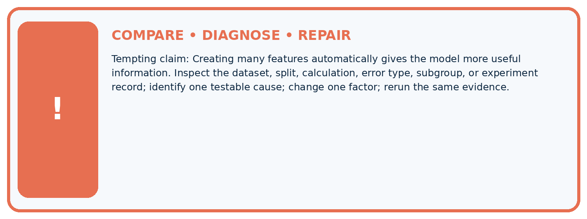
| Evidence record | Expected | Actual | Likely cause / next test |
|---|---|---|---|
| normal case | passes | ||
| boundary case | defined behavior | ||
| missing case | safe fallback | ||
| shifted case | measured limit |
CLAIM TO CHALLENGE Creating many features automatically gives the model more useful information.
Diagnose one cause and name the cleanest next experiment:
A closer explanation
An identifier may appear predictive because related objects leak across splits. Inspect grouped records and proxy risks before adding it.
Never include private student details for this exercise; use the supplied fictional measurements.
Apply the connected idea: Relationships and confounding
A fairer comparison could offer the same task, instructions and assessment and randomly assign fictional groups to practice conditions.
In real classrooms, a teacher must approve any activity and protect equal learning opportunities; this lesson uses a paper plan.
Student lesson · 8 of 18
Practise together
Practise Feature Engineering with support, then explain the deciding step in your own words.
ML STUDIO
Specify Before You Run
A trustworthy result can be reproduced from the recorded data, code, settings, and evaluation rule.

Experiment record
Question to explain
QUESTION + intended use + success threshold
DATA version + grouped split + leakage check
CODE/preprocessing + features + model + settings + seed
METRICS + positive class + units + denominators
PREDICTIONS + errors + subgroup slices + limitations
HUMAN reviewer + release, revise, limit, or stop decision
Write the minimum record needed to reproduce today's result:
A closer explanation
Build a feature log with name, units, source, time available, transformation and missing-value policy. If width is missing, follow a declared training-derived imputation or return a clear unavailable result.
Do not silently use zero, which describes a zero-area object.
Apply the connected idea: Relationships and confounding
A chart title Practice causes success overstates the evidence. Replace it with Practice time and scores in three fictional records, and describe the possible confounder.
Better wording does not repair the study, but it makes the report honest.
Practise with less help: Transform validation
Use workbook W2 for the connected example “Feature engineering”. First fill the input and rule boxes. Try the middle steps before asking for a hint. After a hint, try the next step yourself.
| Plan | Do | Check |
|---|---|---|
| What is given? Which rule or procedure applies? | Record each intermediate step. | Does the result follow? What remains unknown? |
Explain your trace to a partner. Your partner points to one step to check. Swap roles on the next case. Each person writes their own explanation.
Check your reasoning
Use the worked case for Feature engineering. Proposed explanation: “A final answer is enough”. Decide whether this explanation is supported. Point to the step or supplied fact that decides; explain your repair if needed.
Answer on your own before discussion. If you are unsure, say which step you need help with.
Practise the connected topic: Relationships and confounding
Use its named workbook W2. Identify the given inputs, try the middle steps with less help, then explain your trace. Check this claim before group discussion: A successful run proves the conclusion
Explain the picture
What should be saved so another group transforms the query identically? Point to the relevant step in the picture, then write the changed result and the rule or evidence that supports it.
This is supported practice. Keep the separately named independent case for an attempt before feedback.
Student lesson · 9 of 18
Run the investigation
Investigate Feature Engineering. Record the prediction, actual observation or labelled paper trace, explanation and next test separately.
EVIDENCE LAB
Predict → Run → Calculate → Interpret
Keep the test conditions fixed, record every result, and change only one planned factor.
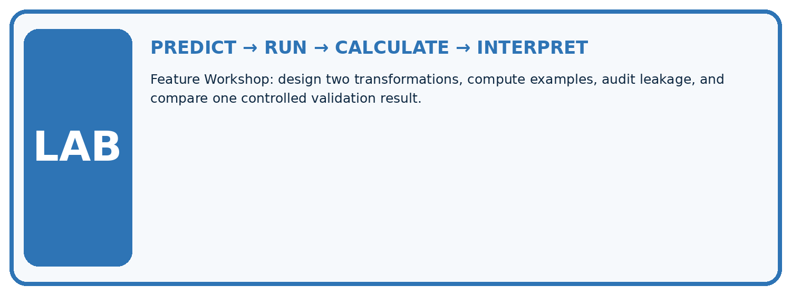
1. Write the hypothesis and expected evidence before running.
2. Feature Workshop: design two transformations, compute examples, audit leakage, and compare one controlled validation result.
3. Run one normal, one boundary, one missing, and one shifted case.
4. Calculate the metric from raw counts or row-level errors.
5. Interpret what changed, what did not, and what remains unsafe or unknown.
| Case | Prediction | Actual | Calculation / evidence | Meaning / next test |
|---|---|---|---|---|
| Normal | ||||
| Boundary | ||||
| Missing | ||||
| Shifted |
Plan → try → check
Before trying: what do I expect, and why? While trying: which step could first go wrong? Afterwards: what did I actually observe, and what should change? Keep “not run” if you only traced the procedure.
Student lesson · 10 of 18
Build your understanding
Move from recall to tracing, diagnosis and transfer in Feature Engineering. Explain why each step is justified.
MASTERY
From Knowing the Word to Owning the Idea
Move upward only when you can produce evidence without copying the example.

DEFINE Use all four terms precisely: transformation, derived feature, aspect ratio, feature pipeline.
CALCULATE Reproduce the worked evidence with units and denominator.
TRACE Explain the data, code or decision path.
DIAGNOSE Creating many features automatically gives the model more useful information.
TRANSFER Solve a fresh dataset or model case.
IMPROVE Change one cause and rerun fixed evidence.
DEFEND State intended use, metric, limitation, and human responsibility.
MASTERY RULE A coached calculation becomes mastery only after a different case is completed independently.
Student lesson · 11 of 18
Connect your project
Apply this week’s idea to Responsible Plant Classifier. Keep an annotated decision and the evidence supporting it.
CUMULATIVE PROJECT
Responsible Plant Classifier
Every week adds one reviewable artifact to the same evidence-based capstone.
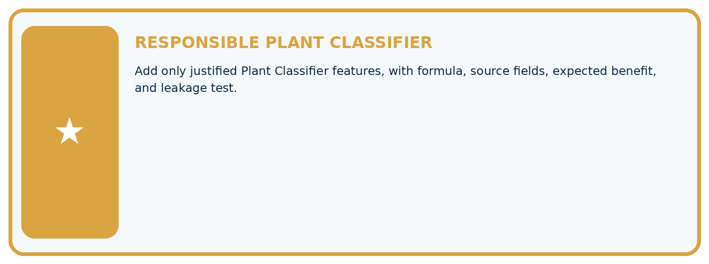
THIS WEEK'S CHECKPOINT Add only justified Plant Classifier features, with formula, source fields, expected benefit, and leakage test.
Which requirement or risk does this artifact address?
Which dataset, split, code, and metric version does it use?
What normal and shifted cases were tested?
What remains uncertain or weak?
What decision still belongs to a teacher or qualified human?
RESPONSIBLE RELEASE Never use this classroom prototype for medical, pesticide, agricultural, or other consequential decisions.
My evidence-linked project decision:
Evidence for your project
For your Responsible Plant Classifier, save the input, procedure, observed result and limitation of this check.
Label this worked example as practice; use a different, previously unreviewed case when checking independent understanding.
Student lesson · 12 of 18
Show what you know
Use a genuinely new case for independent evidence. Previously discussed examples remain practice; use the separately named independent case before feedback.
INDEPENDENT PROOF
Explain • Calculate • Transfer • Defend
Complete this with a fresh case after guided practice and compare it with the mastery criteria.
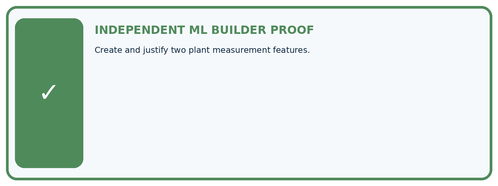
What success looks like
REQUIRED PROOF Create and justify two plant measurement features.
□ Define the task, feature/target roles, and intended-use boundary.
□ Show the calculation, code trace, or experiment record.
□ Test a normal case and one revealing boundary, missing, or shifted case.
□ Diagnose one failure without changing several factors at once.
□ Name a limitation, fairness concern, and the human-review action.
Independent evidence and defense:
My level: □ Not yet □ With one hint □ Independently □ I can teach and defend it
Connect to the next lesson
NEXT BRIDGE Carry the experiment evidence into: Improve Generalization.
Student lesson · 13 of 18
Study a complete case
Revisit the complete Feature Engineering case for supported practice. Repeated examples do not become fresh assessments.
Week 29 Worked case
Use the supplied details to practise the weekly concept before attempting the independent question. This case extends the illustrated lesson.
The situation
Features are leaf length and width in cm; add length/width.
The question
Compute for8 and2; state boundary checks.
Worked explanation
Ratio=4, unitless with matching units. Guard zero/missing width; fit learned transforms on training only.
Explain it in your own words
Which detail supports the answer, and why does it matter?
Trace the supplied case visually
Engineer a ratio with boundary checks
| Evidence or stage | Value or result |
|---|---|
| Length | 8 cm |
| Width | 2 cm |
| Length divided by width | 4, unitless |
| Width zero or missing | Do not divide, handle explicitly |
Features are leaf length and width in cm; add length/width.
Compute for8 and2; state boundary checks.
Ratio=4, unitless with matching units. Guard zero/missing width; fit learned transforms on training only.
Student lesson · 14 of 18
Try a new case independently
Attempt the reserved new case before feedback. Record support; the earlier examples below remain additional practice.
Independent case: Apply independently
Training areas [4, 8, 12]. A new rectangle has length 3 width 4. Compute the training mean and centered new feature; state units.
Attempt this case before feedback. Record any help. Earlier examples below are further practice; a case already practised with feedback cannot establish fresh transfer.
Week 29 Independent application
Close the worked explanation. Apply the idea to this different question without copying.
A feature is leaf_length divided by leaf_width. A row has width zero. What should the preprocessing rule do before division?
My answer, with a trace, calculation or supporting evidence
Create and test
Change one relevant detail. Predict the result before testing. Include a boundary or missing-information case when it helps reveal a limit.
My changed input and expected result
Connect to your project
Add only justified Plant Classifier features, with formula, source fields, expected benefit, and leakage test.
The evidence I will keep
Your teacher has the independent answer and scoring criteria. Complete the matching workbook week to keep your practice evidence together.
Transfer practice from the original programme
Length=12 cm, width=30 mm. Compute length/width using matching units. Explain handling for zero or missing width and where learned scaling is fitted.
Use feedback to improve
Attempt the independent case before hints. Record whether you worked alone, used a hint or followed a model. After feedback, fix the first unsupported step and explain why it changed.
A later check uses a changed case, not a copied answer.
Student lesson · 15 of 18
Your lesson route
Use this map to navigate Feature Engineering, connect the goals to tasks and keep one evidence record for each attempt.
Start with this question: Engineer a feature with a transformation defined before evaluating a new leaf.
| By the end, I can | How I will show it |
|---|---|
| Create features available at prediction time | Explain the deciding step, show a trace or test, and state one limit. |
| Fit feature transformations using training evidence only | Explain the deciding step, show a trace or test, and state one limit. |
| Compare a feature change without changing the evaluation set | Explain the deciding step, show a trace or test, and state one limit. |
Remember → watch and explain → try with help → investigate → try independently → keep project evidence. Your teacher may spread this lesson across several classes.
Keep your first prediction. Compare it with what the evidence shows and explain any change.
Student lesson · 16 of 18
Finish and return
Explain Feature Engineering without notes, identify a remaining question and plan a later check with a changed case.
Close your notes. Explain this goal in your own words: Create features available at prediction time
If you are unsure, return to the worked picture and explain one arrow. If you are ready, change an input or assumption and justify your prediction.
Save your workbook evidence. At the next review, try a different case before opening your old answer.
Student lesson · 17 of 18
Supported practice, repair and portfolio
Attempt supported questions before using hints or feedback. Review a missing building block, then keep the completed work.
Use this supported practice once, in the browser or on paper. Keep the reserved independent assessment for a separate first attempt before teacher feedback.
Engineer a feature with a transformation defined before evaluating a new leaf.
Practice 1: explain the deciding evidence
Which labelled step matches this detail? Centered query feature=8-6=2 cm².
1. Construct area
2. Fit centering
3. Apply unchanged transform
Hint · try first
Hint if needed: Read the steps in the pictorial case. Match the supplied detail to the stage that performs or records it.
Feedback · compare after trying
After your attempt, compare with the supported explanation: Apply unchanged transform Centered query feature=8-6=2 cm². Read the picture in order. Centered query feature=8-6=2 cm².
The arrows show which recorded input or intermediate result each decision uses. Explain the deciding step aloud before checking the changed case; pointing to the final answer alone does not show how it follows.
Practice 2: explain the deciding evidence
Changed case · predict first
Changed-case practice: Include the query in the centering mean. Which conclusion is supported by the supplied facts?
1. Mean becomes26/4=6.5 cm² and query feature1.5 cm²; this changes the fitted transformation.
2. This one example guarantees correct results for every future input.
3. We can decide the result without examining the changed input or the procedure.
Hint · try first
Hint if needed: Use the changed condition and the deciding step in the pictorial trace. The answer must say what follows from those facts.
Feedback · compare after trying
After your attempt, compare with the supported explanation: Mean becomes26/4=6.5 cm² and query feature1.5 cm²; this changes the fitted transformation.
A held-out input should not silently redefine a training-fitted preprocessing step.
Repair a missing building block
Review Learning Curves (ai-4/28). Goal: Read training-size learning curves. Short practice: What comparison is valid if the validation set changes between sizes?
Point to the relevant step in the picture, then write the changed result and the rule or evidence that supports it.. Return to this week and explain what you changed.
Review Reproducible Experiments (ai-4/26). Goal: Record enough detail to reproduce a run. Short practice: What should accompany the mean 70%?
Point to the relevant step in the picture, then write the changed result and the rule or evidence that supports it.. Return to this week and explain what you changed.
Review Hold Out Test Data (ai-4/23). Goal: Freeze the full evaluation procedure before testing. Short practice: What is needed for an honest final claim about the revised version?
Point to the relevant step in the picture, then write the changed result and the rule or evidence that supports it.. Return to this week and explain what you changed.
Predict, run and debug
The browser lab lets you edit the supported Python examples already included in this lesson. Predict first, run, inspect the actual output or error, change one input, then run again.
Keep code, predictions, actual results and a reasoned revision together. On paper, label your result as a trace rather than an execution.
Keep your completed work
Use Download completed work in the hosted lesson to export your answers, reflections, practice feedback and code-run evidence. Open the HTML copy to read or print it.
Drafts stay in this browser when storage is available; clear drafts on a shared device.
Student lesson · 18 of 18
Visual concept journey
Explain each Feature Engineering graphic using its labels, deciding evidence and relevant limitation.
01. Feature Engineering: the case
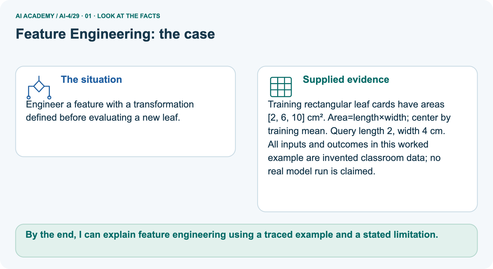
Engineer a feature with a transformation defined before evaluating a new leaf. Supplied facts: Training rectangular leaf cards have areas [2, 6, 10] cm². Area=length×width; center by training mean. Query length 2, width 4 cm.
All inputs and outcomes in this worked example are invented classroom data; no real model run is claimed.
Point to the given fact that matters most. Explain why it matters.
02. Follow the deciding steps
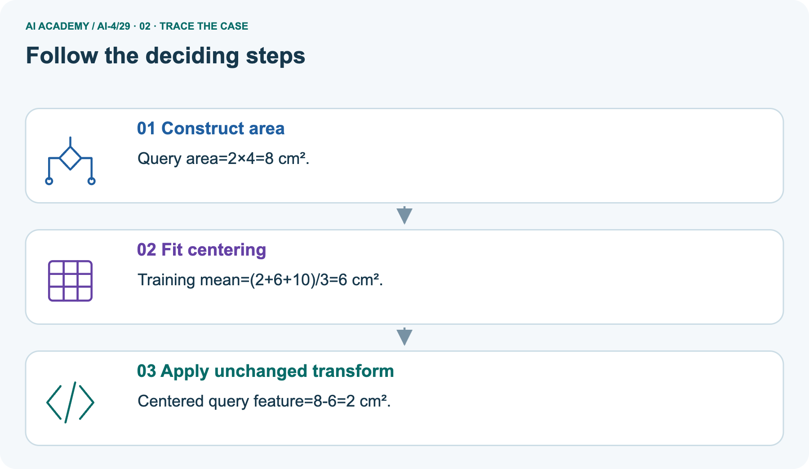
Construct area: Query area=2×4=8 cm². → Fit centering: Training mean=(2+6+10)/3=6 cm². → Apply unchanged transform: Centered query feature=8-6=2 cm².
Point to each numbered stage and explain which recorded input it uses.
03. Follow the evidence
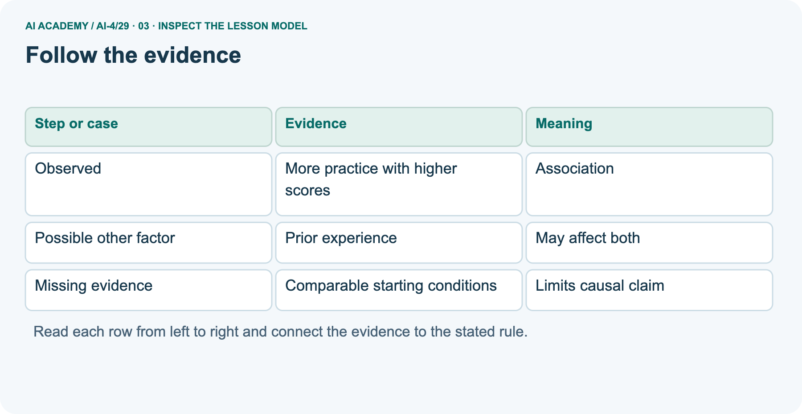
Follow the evidence. Observed | More practice with higher scores | Association. Possible other factor | Prior experience | May affect both. Missing evidence | Comparable starting conditions | Limits causal claim
Read the labels and values. Explain the relationship the model shows.
04. Change one thing. Trace what follows.
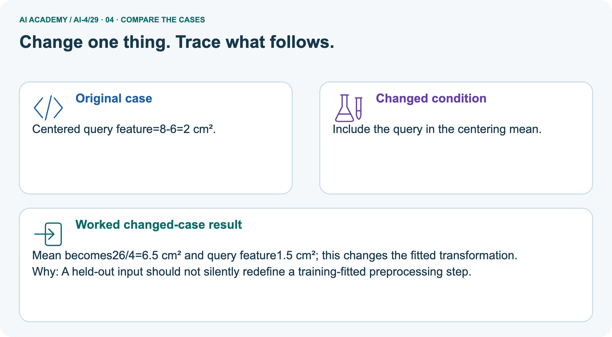
Original case: Centered query feature=8-6=2 cm². Changed condition: Include the query in the centering mean. Expected result: Mean becomes26/4=6.5 cm² and query feature1.5 cm²; this changes the fitted transformation.
Reason: A held-out input should not silently redefine a training-fitted preprocessing step.
Predict before checking the worked changed-case result. Name what changed and what the supplied facts allow you to conclude.
05. Connect the explanation to its limit
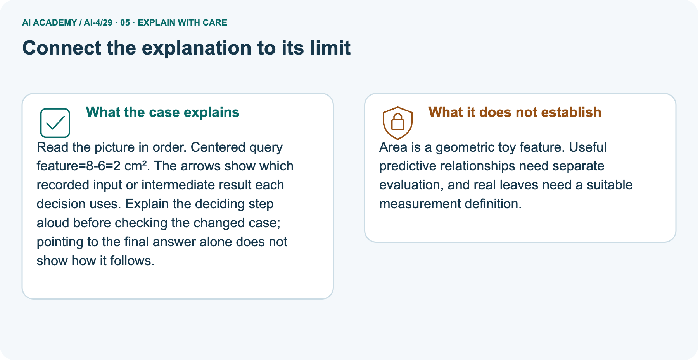
Read the picture in order. Centered query feature=8-6=2 cm². The arrows show which recorded input or intermediate result each decision uses.
Explain the deciding step aloud before checking the changed case; pointing to the final answer alone does not show how it follows. Limit: Area is a geometric toy feature.
Useful predictive relationships need separate evaluation, and real leaves need a suitable measurement definition.
Explain the case, then point to a limit on the claim.
06. Make the idea visible in your project

For your Responsible Plant Classifier, save the input, procedure, observed result and limitation of this check.
Label this worked example as practice; use a different, previously unreviewed case when checking independent understanding. Draw your input, deciding step, result and limit.
Supported question: What should be saved so another group transforms the query identically? Point to the relevant step in the picture, then write the changed result and the rule or evidence that supports it.
Draw your project trace and justify the deciding step using evidence.